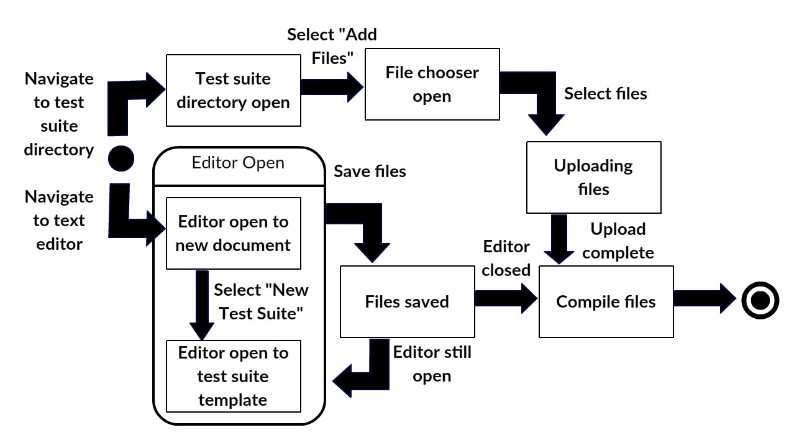
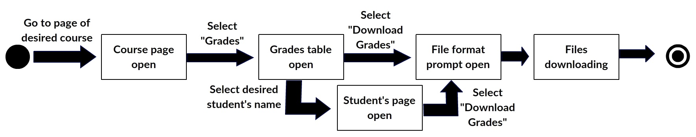
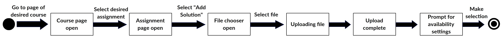
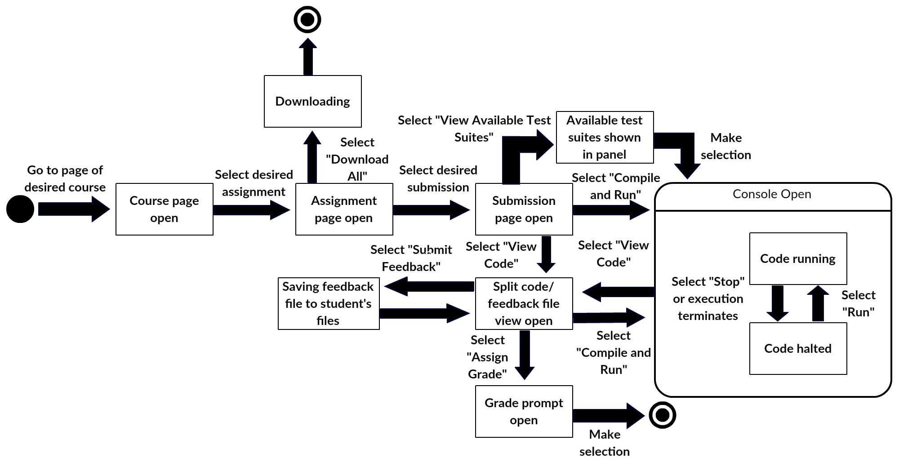
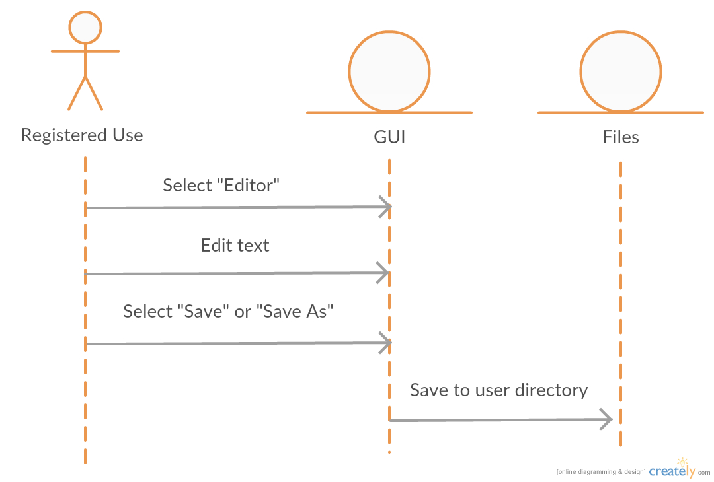

Use Cases
UC10. Name: Add Test Suite
User stories addressed: 7
Actors: Instructor
Preconditions: Instructor is logged in and on the main page.
-
Main Scenario:
- 1) Instructor selects the "Editor" button.
- 2) Instructor selects the "Test Suite" option under the "New" menu tab.
- 3) Instructor writes the test suite.
- 4) When the instructor navigates away from the editor the system compiles the files in the instructor's "Test Suites" directory.
- Postconditions: Postconditions: The instructor's test suite is saved and compiled. It is not associated with any particular assignment.
-
Alternate scenario:
Upload Existing Test Suite
- 1.0) Instructor selects "Files".
- 1.1) Instructor selects the "Test Suites" directory.
- 1.2) Instructor selects "Add Files".
- 1.3) Instructor uploads the files from their computer.
- 1.4) When the instructor navigates away from the "Test Suites" directory the system compiles the files.
- Postconditions: The instructor's test suite is saved and compiled. It is not associated with any particular assignment.
-
Alternate scenario:
Invalid Upload
- 1.0.0) Instructor is informed the files they uploaded are invalid (with a reason if possible.)
- 1.0.1) Instructor is returned to their "Test Suites" directory.
- Postconditions: Nothing is saved by the system.
State Chart

Sequence Diagram
UC11. Name: Associate Test Suite with Assignment
User stories addressed: 8
Actors: Instructor
Preconditions: Instructor is logged in and on the main page.
-
Main Scenario:
- 1) Instructor navigates to the page of the relevant course.
- 2) Instructor selects the assignment/evaluation with which they want to associate the test suite.
- 3) Instructor is prompted to select the desired test suite from their "Test Suites" directory.
- 4) Instructor is prompted to select whether they want the suite run automatically on incoming submissions.
- 5) Instructor is prompted to select if they want the suite to automatically return results to students.
- Postconditions: The system saves the suite to apply to the assignment's submissions.
-
Alternate scenario:
Associate Test Suite with New Assignment
- 2.0) Instructor selects the "Add New Evaluation" option. (Refer to User Story 6)
- 2.1) Instructor adds an assignment.
- Continue to 3) in the main scenario.
State Chart

Sequence Diagram
UC12. Name: Retrieve Students' Marks
User stories addressed: 9
Actors: Instructor
Preconditions: Instructor is logged in and on the main page.
-
Main Scenario:
- 1) Instructor selects any course the specified student is taking and is taken to the course page.
- 2) Instructor selects "Grades" and is taken to a page containing a table with all marks for every student in that course.
- 3) Instructor selects "Download Grades" and is prompted to select a file format (XML, CSV, etc.)
- 4) The table is downloaded to the instructor's computer.
- Postconditions: The instructor has access to a file containing all student marks in the selected course.
-
Alternate scenario:
Retrieve One Student's Marks
- 3.0) Instructor chooses the desired student from the table.
- 3.1) Instructor is taken to a page with a table containing the students grades in all the courses they have access to (i.e., in which the instructor is either a Marker or Instructor.)
- 3.2) Instructor selects "Download Grades" and is prompted to select a file format.
- 3.3) The table is downloaded to the instructor's computer.
- Postconditions: The instructor has access to a file containing the student's marks.
State Chart

Sequence Diagram
UC13. Name: Upload Assignment Solutions
User stories addressed: 10
Actors: Instructor
Preconditions: Instructor is logged in and on the main page.
-
Main Scenario:
- 1) Instructor navigates to the page of the relevant course.
- 2) Instructor selects the relevant assignment.
- 3) Instructor selects the "Add Solution" option.
- 4) Instructor is prompted to upload a file (docx, pdf, doc, etc.)
- 5) Instructor selects when solution is to be made available (immediately, as soon as assignment deadline is reached, at specified time.)
- Postconditions: The instructor has access to a file containing all student marks in the selected course.
-
State Chart

Sequence Diagram

UC14. Name: Mark Assignments
User stories addressed: 9
Actors: Marker
Preconditions: Marker is logged in and on the main page.
-
Main Scenario:
- 1) Marker selects the relevant course.
- 2) Marker selects the relevant evaluation.
- 3) Marker selects the first submission they want to grade.
- 4) Marker is given the option to either compile and run the submission or review the code.
- 5) Marker selects "Compile and Run"
- 6) The program is run in the terminal window.
- 7) The marker selects "Assign Grade".
- 8) The marker is prompted for a grade.
- 9) The marker is returned to the evaluation page.
- Postconditions: The system assigns the marker's grade to the evaluation, sends the student any feedback, notifies the student.
-
Alternate scenario:
Download Every Assignment Submission
- 3.0) Marker selects "Download All".
- 3.1) The code is downloaded to the marker's computer.
- Postconditions: The marker has downloaded every submission's code.
-
Alternate scenario:
Download One Assignment
- 3.0) Marker selects the targeted submission.
- 3.1) Marker selects "Download".
- 3.2) The code is downloaded to the marker's computer.
- Postconditions: The marker has downloaded the assignment's code.
-
Alternate scenario:
Use Test Suite Added by Instructor
- 5.0) Marker selects "View Available Test Suites".
- 5.1) Marker selects the "Use for selected evaluation" option of the appropriate test suite.
- 5.2) The suite's output is displayed to the marker.
- Postconditions: The system displays the suite's results.
-
Alternate scenario:
Marker Views the Code
- 5.0) The marker is shown the code and a blank editable comments file in adjacent panes.
- 5.1) The marker selects "Submit Feedback".
- 5.2) The marker is returned to the targeted submission's page.
- Postconditions: The system displays the assignment's code.
State Chart

Sequence Diagram
UC15. Name: Use Text Editor
User stories addressed: 12
Actors: Registered User
Preconditions: Student is logged in and on the main page.
-
Main Scenario:
- 1) Student selects the "Editor" button.
- 2) Student is taken to a basic text editor.
- 3) Student saves the file to their directory in the cloud.
- Postconditions: The system saves the file the student has created. The user is still on the editor page.
-
State Chart

Sequence Diagram
